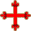

Iberische Orden
SPANIEN
 Der Orden von Calatrava
Der Orden von Calatrava (Órden de Calatrava), der älteste Ritterorden der iberischen Halbinsel, wurde 1158 von Raimundo Serrat, Abt des Zisterzienserklosters von Fitero in Spanien, gegründet. Aufgabe des Ordens war die Verteidigung der Burg Calatrava, direkt an der Grenze zu muselmanischem Gebiet im Süden Kastiliens. Die Festung (Qal'at Rabah) war 1145 durch König Alfons VII. von Kastilien von den Mauren zurückerobert worden. Dieser hatte sie dann dem Templerorden überlassen, die Templer fühlten sich jedoch einer Verteidigung angesichts der Offensive der Almohaden nicht gewachsen und gaben dem König die Burg 10 Jahre später wieder zurück.
Der Orden von Calatrava wurde von Papst Alexander III. am 25. September 1164 bestätigt.
Durch eine Erklärung des Ordenskapitels, datiert vom September 1187, wurden die Mitglieder des Calatrava-Ordens dem Orden von Cîteaux angegliedert. Die Ritter lebten in Burgen, während die Kaplane als Geistliche in den Prioreien unterkamen. Alle Ordensmitglieder wurden jedoch als Zistenziensermönche behandelt und hatten sich an die Ordensregel zu halten. Wie die Templer übten die Mitglieder des Calatrava-Ordens keine Hospitaltätigkeit aus.
Der Orden von Calatrava ist der bedeutendste Orden im iberischen Raum, zahlreiche andere Orden sind ihm angegliedert oder wurden ihm unterstellt: Alcantara, Avis, später auch der nur kurz existierende Orden von Santa Maria sowie der Orden von Montesa und der Christusorden, die beide aus den Überresten des Templerordens entstanden waren. All diese Orden bilden die große Familie der kämpfenden Zisterzienserorden.
Der Calatrava-Orden wurde 1487, nach dem Tod des dreißigsten Hochmeisters, von den Katholischen Königen der spanischen Krone unterstellt. Am 25. Juli 1835, im Anschluss an die Auflösung der Klöster durch die spanische Regierung, wurde der Prior des Sacro Convento vertrieben, die Ritter sprengten die eigene Festung in die Luft. Die Situation der Orden wurde erst am 17. Oktober 1851 geregelt, als alle Orden im Gebiet Ciudad Real gruppiert wurden. Dieses Gebiet bildet eine unabhängige Diözese und erhielt den Titel Privato de las Ordenes. Das Oberhaupt der Diözese ist der Bischof-Prior, dem ein kanonisches Kapitel zur Seite steht, dessen Mitglieder einem der vier Orden angehören müssen: Calatrava, Alcantara, Santiago und Montesa.
Die Mitgliedschaft im Orden von Calatrava ist heute rein ehrenamtlich, allerdings leben nach wie vor Comendadoras in zwei Konventen in Madrid und Burgos.
 Der Orden von Alcantara
Der Orden von Alcantara
Der Orden von Alcantara (Órden de Alcántara) soll im Jahr 1177 im Zuge der Gründung des Templerordens gegründet worden sein. Allerdings gehen seine Ursprünge auf das Jahr 1156 zurück, als zwei Brüder, Suarez und Gomez, auf Anraten eines Eremiten eine Festung an der kastilischen Grenze errichteten, in der Diözese von Ciudad Rodrigo, um den Mauren Widerstand zu leisten. Sie gaben dem Orden den Namen San Julián del Pereiro. 1177 wurde der Orden auf Gomez' Bitte hin, der zu dieser Zeit nur Prior war, als religiöser und militärischer Orden von Papst Alexander III. bestätigt. In einer Bulle des Papstes Lucius III., datiert vom Jahr 1183, wird er bereits als Hochmeister erwähnt. Diese Bulle stellte die Ritter zudem unter die Ordensregel des Hl. Benedikt.
In die Amtszeit des zweiten Hochmeisters, Don Benito Suarez, fällt der brüderliche Zusammenschluss mit den Rittern des Ordens von Santiago. Die zwei Hochmeister schworen ewige Allianz und Treue gegenüber den Königen von Kastilien und Leon im Kampf gegen die Mauren. Die Ritter unterstellten sich der Ordensregel von Cîteaux, ihr Siegel zeigte einen Birnbaum in Gedenken an ihre Einrichtung.
König Leon Alfons IX., der sich 1217 zum Herrn von Alcantara am Tajo gemacht hatte, schenkte den Ort den Rittern von Calatrava. Letzere empfahlen dem Herrscher jedoch, den Ort den Rittern von Santiago zu überlassen, die an den Kämpfen teilgenommen hatten, vorausgesetzt, sie würden sich mit den Rittern von Calatrava zusammenschließen. Die Vereinigung beider Orden erfolgte 1218, die Ritter von Alcantara, nunmehr unter ihrem neuen Namen, behielten ihre Unabhängigkeit und beteiligten sich nicht unerheblich an den folgenden Kriegen gegen die Mauren.
Im Jahr 1872 wurde der Orden von Alcantara ein erstes Mal aufgelöst, unter General Franco jedoch 1936 endgültig bestätigt.
 Der Orden von Montesa
Der Orden von Montesa
Der Orden von Montesa (Órden de Montesa) findet seinen Ursprung im Templerorden. Als der Templerorden 1312 von Papst Klemens V. aufgelöst wurde, wurden seine Güter dem Hospitalorden übergeben. Jakob II., König von Aragon, widersetzte sich dieser Übergabe jedoch in den ihm unterstehenden Ländern. 1317 gab er schließlich seine Einwilligung zu einem Kompromiss: Der Zusammenschluss wurde in Aragon und Katalonien durchgeführt, im Königreich Valencia jedoch wurde ausgehend von dem im Prozess als unschuldig anerkannten Zweig des Templerordens ein neuer Orden gegründet, der Orden "Nuestra Señora de Montesa".
Die Statuten des Ordens, die sich nur unwesentlich von denen der Templer unterschieden, wurden 1317 von Papst Johannes XXII. bestätigt. Hauptaufgabe des Ordens von Montesa war die Verteidigung der Küste des Königreichs von Valencia gegen Piraten und Mauren. Die Ordensmitglieder folgten der Ordensregel von Cîteaux, wurden jedoch der katalanischen Abtei von Santes Creus unterstellt. Der Orden von Montesa wurde dem Orden von Calatrava angegliedert, von dem er das Lilienkreuz übernahm, er behielt jedoch seine Unabhängigkeit.
Im Jahr 1400 nahm der Orden von Montesa den alten Orden der "Ritter vom heiligen Georg von Alfama" auf und übernahm bei dieser Gelegenheit dessen schlichtes, rotes Kreuz, das an das ehemalige Templerkreuz erinnerte.
Der erste der 14 regierenden Hochmeister war Guillén de Eril. 1587 unterstellte Philipp II. den Orden von Montesa der Krone, danach waren die Könige von Spanien Ordensmeister.
Im 19. Jhdt. enteignete der spanische Staat den Orden, sodass die Ordensmitgliedschaft heute nur mehr als Ehrenamt fortbesteht.
PORTUGAL
Der Christusorden
Nach der Auflösung des Templerordens erhielt der König von Portugal, Dionysisus I., im Jahr 1319 von Papst Johannes XXII. die Genehmigung zur Gründung des "Ordens der Christusritter" (portugiesisch: Ordem de Cavalaria de Nosso Senhor Jesu Cristo). Im Prinzip handelte es sich dabei um nichts anderes als eine Fortführung des Templerordens unter einem anderen Namen. So fanden denn auch zahlreiche Templer dort Zuflucht. Aufgabe der Christusritter, wie auch diejenige der Templer, war der Kampf gegen die Mauren. Die Christusritter behielten auch das weiße Habit mit rotem Kreuz der Templer bei. Zwar war der Christusorden fast ausschließlich portugiesisch, er blieb jedoch an den Orden von Calatrava angegliedert. Hauptsitz des Ordens war Castro Marino, bis er nach Tomar verlegt wurde.
Der Orden war der Regel des Hl. Benedikt unterworfen und die Ritter erhielten alle Privilegien, Rechte, Steuerbefreiungen und Gerichtshoheiten, von denen auch die Tempelritter profitiert hatten. Nach und nach wurden sie von ihren Gelübden der Armut, der Keuschheit und des Gehorsams befreit. Alexander VI. (Papst von 1492 bis 1503) genehmigte sogar die Eheschließung und die Könige von Portugal überhäuften die Ritter mit Reichtümern. Johannes I. (König von 1385 bis 1433) schenkte ihnen seinen gesamten Besitz sowie die Kolonien in Afrika und behielt sich lediglich das Recht der Oberhoheit vor. Als der Orden dann zu mächtig wurde, wurde bestimmt, dass alle neuen Eroberungen des Ordens der Krone zufallen sollten. Außerdem verband Papst Julius II. 1550 die Hochmeisterschaft des Ordens mit der Krone Portugals. Von diesem Zeitpunkt an wurden die König zu den Administratoren des Ordens.
Am Ende des Mittelalters war der Christusorden der einzige Orden auf iberischem Gebiet, der nach wie vor seiner ursprünglichen, vom Ideal der Kreuzzüge inspirierten Aufgabe nachging. Der Orden erwies sich als treibende Kraft bei allen portugiesischen Expeditionen entlang der afrikanischen Küste (Vasco de Gama war Christusritter).
1789 wurde der Christusorden wie auch der Orden von Avis von Königin Maria umstrukturiert. Sie verlieh ihm neue Statuten, die bis 1918 ihre Gültigkeit bewahrten. Die Ordensmitgliedschaft war zu einem reinen Ehrenamt geworden. Die heutigen Statuten wurden am 24. November 1963 bestätigt, der Orden nimmt nunmehr einen Platz hinter dem Orden von Avis ein. Er wird derzeit von der Republik verwaltet, als Gegenleistung für geleistete, außerordentliche Zivildienste, und kann hochgestellten Persönlichkeiten aus dem Ausland verliehen werden.
Man ist sich allgemein einig, dass sich der Papst im Rahmen der ursprünglichen Genehmigung zur Gründung des Christusordens im Jahr 1319 das Recht vorbehielt, dem Beitritt der Ritter zuzustimmen. Allerdings ist kein Nachweis für diese Handhabung überliefert. Im Verlauf des XVII. Jhdts. ernannte Rom einige "Christusritter". Die Könige von Portugal widersetzen sich dieser Vorgehensweise jedoch vehement. Im Jahr 1905 richtete Papst Pius X. dennoch den Orden Militia Domini Nostri Iesu Christi als wichtigsten Orden unter päpstlicher Verwaltung ein. Seit Paul VI. wurde der Christusorden ausschließlich Staatsoberhäuptern zu besonderen Anlässen verliehen.